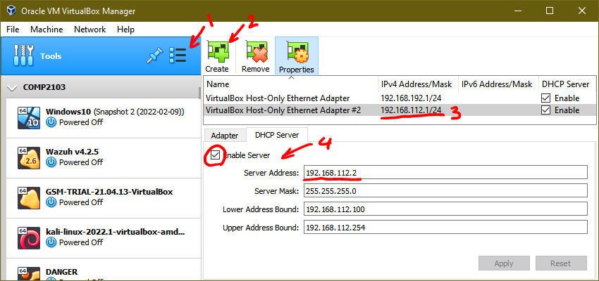

Nmap utility has many options. For our purposes, we are going to just start with the GUI tool (Zenmap in Windows). The GUI application shows you the actual nmap CLI command and flags that are being executed, so you can use this tool as a quick way of learning or looking up flags and options for the CLI utility. This can be useful in case your Windows host does not run nmap correctly and you are receiving errors, you can use any other VM (Kali Linux for example), to execute the same commands via CLI.
Create a Host-only Adapter (or use an existing one if you already have one). Make sure to note the IP
address of this network and configure DHCP. See the screenshot below as an example:

Download this file to your system from the Link provided in Blackboard. Import the Virtual Appliance to
Virtualbox: File > Import Appliance …
In the wizard select the source as “Local File System” and provide the path to DANGER.ova. You can accept the defaults, but you will have to change a few settings before starting this VM.
Once the VM is created change the network interface settings to connect to the Host-only Adapter. See the
screenshot below for an example:
Notice: This is an intentionally (VERY) vulnerable machine, so DO NOT CONNECT THIS TO INTERNET OR YOUR BRIDGED NETWORK!
Please download the VirtualBox version of the OVA from the official website and import the appliance into
VirtualBox using the same method as before by using: File > Import Appliance …
Configure the VM before starting:
NOTICE: PLEASE USE nmap RESPONSIBLY. Do NOT run this tool in networks and against devices that you do not own. Additionally, some devices or services may crash, or your network devices may malfunction due to the additional load. Although such events indicates a serious problem with the target device's security and a reboot of the affected device may restore functionality, do not attempt to target a device that you do not own or otherwise have full control over. DO NOT run nmap over Georgian College's networks or against hosts on the internet.
Start your DANGER VM in headless mode in VirtualBox by the following method: Click on the small arrow
beside the “Start” and select “Headless Start” (see screenshot below).
You do not know the IP address of the DANGER VM at this point, however, you can use nmap to
"discover" the host and its IP address. Launch Zenmap in your host OS and scan the VirtualBox
Host-only network to find out the IP address of the new host and any other services on this network. To
accomplish this, provide the Target as the Virtual Network’s
Address and set the profile to Ping scan. Refer to the
screenshot below:
Click on Scan and wait for the scan to finish. You should see results in
the “Nmap Output” tab below the command. If your VM is running correctly on this network and DHCP was
successful, it should have obtained IP addresses for hosts within the IP range and you should be able to
tell what IP address was assigned to the DANGER VM and see all other hosts that were discovered on this
network.
Notice: Zenmap provides the full CLI command for nmap. If you are receiving database errors in the output throughout the lab, this may indicate the nmap is not working properly in your host. This is a known issue and has been around for a while. You can attempt to troubleshoot and fix the database errors in your host, or simply use another VM to run nmap from. The other VM does not need to have a GUI version of nmap. As an example use the Windows VM from lab 1 with Zenmap, or download Kali Linux.
Q1: If DANGER is the only VM running on your host-only network, how many hosts (assigned IPs) did the nmap ping scan detect?
Q2: Since you know the IP address of the VM, do a regular scan against
the VM only. How many open ports and services are listening on DANGER?
Q3: Select Intense Scan from the Profile drop-down menu. What additional
nmap flags are set in the command compared to Regular scan?
Execute the intense scan. Wait for the scan to finish and examine the
output. It may take a while for this scan to complete. Answer the following questions based on the full
nmap output of the intense scan.
Q4: What FTP server is currently running on DANGER? Provide the software name and version as it appears in the scan results.
Q5: Under the section Ftp Server status what is the state of encryption
for Control connection and Data transmission?
Examine the encryption used by the SMTP server running on DANGER:
Q6: What method of encryption is in use by the SMTP server?
Q7: Does this encryption protocol meet the minimum required standards for the web today? (you can look up under “History and development” of this Wikipedia article: https://en.wikipedia.org/wiki/Transport_Layer_Security as a reference).
Run nmap with the Intense scan, all TCP ports profile. Make sure to wait
for the scan to complete before answering the following questions:
Q8: How many open ports are discovered using Intense scan, all TCP ports?
Q9: Looking at the results of Intense scan, all TCP ports , what version
of Linux kernel seems to be running on DANGER under the OS details?
Q10: in the results of Intense scan, all TCP ports what is determined to
be the current state of smb-security-mode? You can use Microsoft
documentation for more information about this feature as a reference: https://learn.microsoft.com/en-us/troubleshoot/windows-server/networking/overview-server-message-block-signing
As you can tell by now, much information can be discovered about a host just by looking at the exposed network services and profiling. Feel free to play with nmap and scan your VMs. For example, you can try scanning the Windows 10 Home N VM that was used in Lab 1 to see how much information can be pulled from a Windows 10 VM.
Notice: Since we are using VMs and the scan tasks may take a long time (up to several hours for GSM scan in the second part of the lab), please make sure you can leave your computer running for the duration of the scan. Here are a few recommendations:
Start your GSM VM, and make sure that DANGER is also running. Once the VM loads you need to perform some
configuration in the software before you can use the appliance.
In the virtual console log into the GSM using the following credentials:
Username: admin Password: admin
Username: admin
Password: adminUse the arrow keys and the tab key to
navigate the character graphics UI of the “Greenbone OS Administration”.
You will be asked to create a user account for the WebUI. Please create a username and type the password
(use the arrow keys to navigate between username and two password
fields, and when done hit Tab to select OK). Follow the prompts and
when you are asked to enter the “GSM Subscription Key” use the Skip
button.
Once you are in the main menu navigate to Setup and select Network. Select Interfaces and examine
the settings for eth0 and eth1. You have the option to have both interfaces to be configured via IPv4
DHCP. Once you verify this, you should be able to use Zenmap to simply do a “Ping scan” and find out the
IP address of the new host.
To avoid having to constantly look for this changing IP address later, optionally You can assign a static
IP to eth1 (host-only adapter). If you select Static IP “Enabled” you must enter the address in CIDR
notation (example: 192.168.abc.xyz/24).
As an example, in this screenshot I have set my eth1 (host-only network) to static IP configuration:
First using the terminal initiate a feed update. In the console main administration menu, navigate to
Maintenance > Feed > Update. This will initiate the feed update.
Log into the Web interface using the credentials you created in the last step. Navigate to Administration > Feed Status. If you
see the feed status as Update in progress... Wait for the update to
finish (this may take some time).
After the update is complete you should see the feed status as mostly “Current” or may indicate a few days old. This is expected and fine for our use case. It should look something like the following screenshot.
You can create targets manually, and configure your environment, however, for this lab, we are only
scanning one target. The fastest way to get started is by using the Task Wizard. Navigate to Scans > Tasks. You should see a small
magic wand icon at the top left corner. Mouse over and select Task Wizard.
Here you will only need to enter the IP address of DANGER to immediately create the scanning task. Your
new task will be listed as Immediate Scan of IP ... in the list of
tasks. The status should change from requested to queued to 0% fairly quickly, however,
the entire scan will take several hours.
Please be patient and initiate this scan when you think you will be able to allow your computer to run for this task to complete.
Once the scan is complete you can examine the results by clicking on the “last report” in the tasks list
or by navigating to Scans > Reports.
At the top of the page, you can export the report in various formats. As an example, try exporting the reports in PDF format and examine the report (you are NOT required to submit the PDF report, this is for your review only).
Export the reports again in CSV format this time and this CSV file is what you are to submit to
Blackboard as part of the deliverables for this lab. Change the filename to <Firstname> <lastname> <StudentID>.csv.
Bring up the VirtualBox Console for GSM. In the Greenbone OS Administration menu, select Maintenance, Power and then Shutdown.
Notice that tools such as nmap and GSM do not need to use agents or have authentication access to a system to find information about a system. These tools can be pointed at any network-attached device, such as printers, switches and routers, IoT, industrial, or otherwise proprietary devices, as long as they use standard network protocols, to scan for potential exposures and vulnerabilities.
Please submit the following to Blackboard under your lab 2:
<Firstname> <lastname> <StudentID>.csv and
attach the file to your submission in Blackboard.